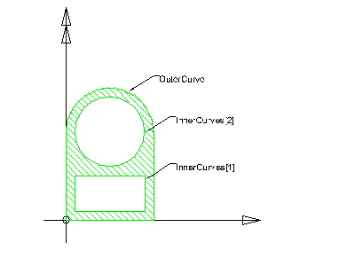

8.15.3.3 IfcArbitraryProfileDefWithVoids
| Beliebiges geschlossenes Profil mit Löchern |
The IfcArbitraryProfileDefWithVoids defines an arbitrary closed two-dimensional profile with holes. It is given by an outer boundary and inner boundaries. A common usage of IfcArbitraryProfileDefWithVoids is as the cross section for the creation of swept surfaces or swept solids.
HISTORY New entity in IFC2x.
Informal Propositions:
- The outer curve and all inner curves shall be closed curves.
- The outer curve shall enclose all inner curves.
- No inner curve shall intersect with the outer curve or any other inner curve. That is, no two curves of the profile definition shall have a point or segment in common, taken into account the geometric precision factor of the geometric representation context. In other words, curves must neither cross nor touch each other.
- No inner curve may enclose another inner curve.
Figure 356 illustrates the arbitrary closed profile definition with voids. The OuterCurve, defined at the supertype IfcArbitraryClosedProfileDef
and the inner curves are defined in the same underlying coordinate system. The common underlying coordinate system is defined by the swept area solid that uses the profile definition. It is the xy plane of:
- IfcSweptAreaSolid.Position
or in case of sectioned spines the xy plane of each list member of IfcSectionedSpine.CrossSectionPositions. The OuterCurve attribute defines a two dimensional closed bounded curve, the InnerCurves define a set of two dimensional closed bounded curves.
 |
Figure 356 — Arbitrary profile with voids |
XSD Specification:
<xs:element name="IfcArbitraryProfileDefWithVoids" type="ifc:IfcArbitraryProfileDefWithVoids" substitutionGroup="ifc:IfcArbitraryClosedProfileDef" nillable="true"/>
<xs:complexType name="IfcArbitraryProfileDefWithVoids">
<xs:complexContent>
<xs:extension base="ifc:IfcArbitraryClosedProfileDef">
<xs:sequence>
<xs:element name="InnerCurves">
<xs:complexType>
<xs:sequence>
<xs:element ref="ifc:IfcCurve" maxOccurs="unbounded"/>
</xs:sequence>
<xs:attribute ref="ifc:itemType" fixed="ifc:IfcCurve"/>
<xs:attribute ref="ifc:cType" fixed="set"/>
<xs:attribute ref="ifc:arraySize" use="optional"/>
</xs:complexType>
</xs:element>
</xs:sequence>
</xs:extension>
</xs:complexContent>
</xs:complexType>
EXPRESS Specification:
|
ENTITY IfcArbitraryProfileDefWithVoids
|
|
|
| WR1 | : | SELF\IfcProfileDef.ProfileType = AREA; | | WR2 | : | SIZEOF(QUERY(temp <* InnerCurves | temp.Dim <> 2)) = 0; | | WR3 | : | SIZEOF(QUERY(temp <* InnerCurves | 'IFCGEOMETRYRESOURCE.IFCLINE' IN TYPEOF(temp))) = 0; |
|
 EXPRESS-G diagram
EXPRESS-G diagram
Attribute Definitions:
| InnerCurves | : | Set of bounded curves, defining the inner boundaries of the arbitrary profile. |
Formal Propositions:
| WR1 | : | The type of the profile shall be AREA, as it can only be involved in the definition of a swept area. |
| WR2 | : | All inner curves shall have the dimensionality of 2. |
| WR3 | : | None of the inner curves shall by of type IfcLine, as an IfcLine can not be a closed curve. |
Inheritance Graph:
|
ENTITY IfcArbitraryProfileDefWithVoids
|
 Link to this page
Link to this page